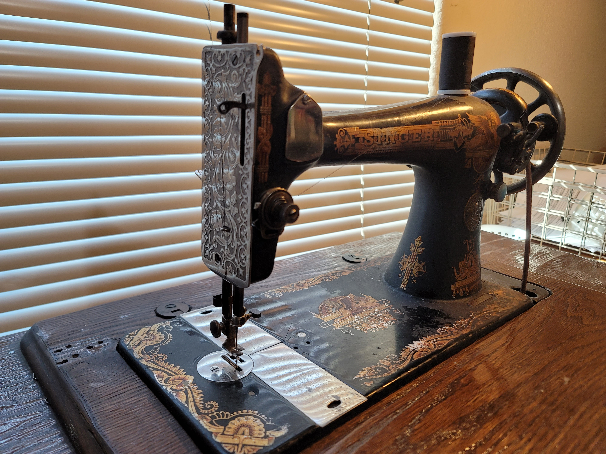
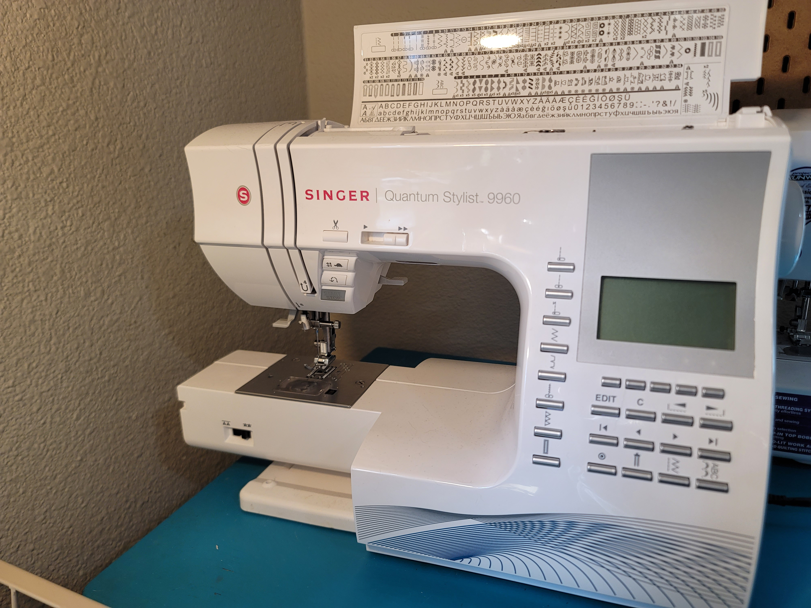
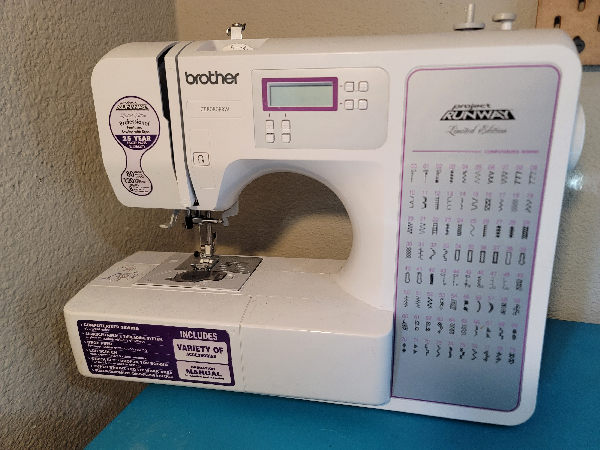
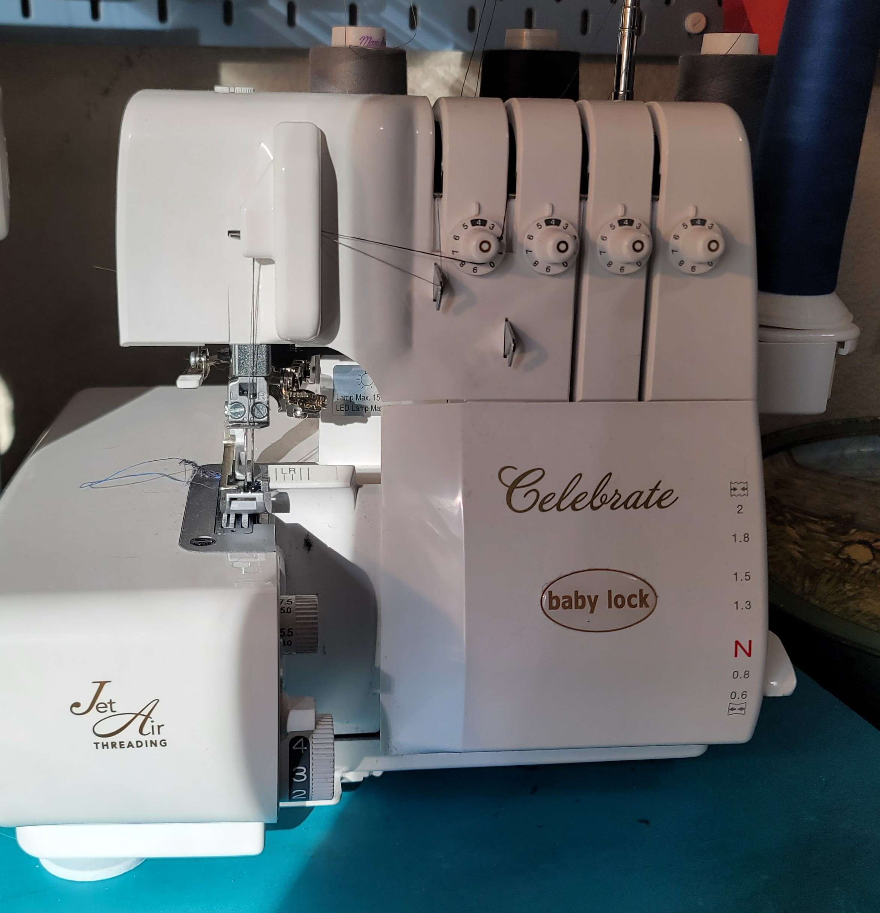
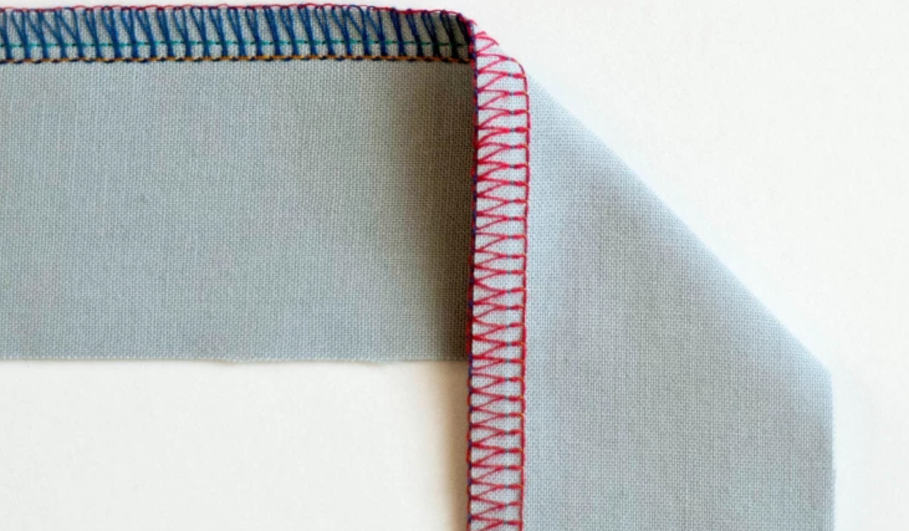

Meet the Ladies (aka the Sewing Machines)
-
The Antique

-
New Kid

-
Oh brother

-
The Cadillac

This baby is a recently acquired machine but she is my pride and joy. This is an Antique Singer sewing machine that is non-electronic from 1925 a type 127. This machine runs on leg power, requiring its foot pedal to be continuously pumped back and forth to make a stitch. These machines were mass produced but were sold throughout the United States. I acquired this from a neighbor who was moving and wanted to give her grandmother's machine to a good home. With a little love and a lot of oil, I restored this baby to her former glory. She is the most heavy duty of all my sewing machines, able to go through leather and fingers!
This is the great great grandkid of the Antique, the singer quantum stylist 9960. She is the newest of my sewing machines, an upgrade from her grandmother that is able to do every stitch in the book. This baby has all the bells and whistles of a modern machine, computerized sewing and it doesn't even need a foot pedal. There is now a button on the side of the machine you can press and it does all the work for you
This was my first ' big girl ' Sewing machine, my first sewing machine I could call mine. I got this as a Christmas gift after my mothers old machine that I worked on bit the dust. This also has computerized sewing but it's not as fancy as the New Kid. It's my tried and true machine that I let others practice on since it is far more approachable to use. This one requires an electronic foot pedal which is pretty typical of most modern sewing machines
This baby is actually not a sewing machine, this is a serger. Serger machines are used in large clothing manufacturing and in day to day sewing. If you turn your shirt inside out and notice the stitching on the sleeves. that is a serger stitch. A typical stitch of a sewing machine looks like this:
The reason I call this bad boy my Cadillac is because this is my second serger. My first serger was a nightmare, it was super heavy, old and it was extremely hard to thread. Sergers are not sewing machines, but it is fair to say that they're a type of specialty sewing machine. A serger, sometimes called an overlocker, uses an overlock stitch that does not come on sewing machines. It uses three or more thread sources to create this overlock stitch and create a professional-grade binding for fabric. So these Machines can be very difficult to manage but this Babylock Celebrate serger has air threading. Air threading you just press a button and the machine threads itself. This was my first big purchase after my gaming laptop, which oddly enough I paid more for the surger.